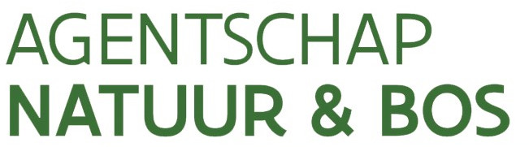

Afbakening van de open ruimte voor patrijs in functie van de jachtreglementering
Thierry Onkelinx
 0000-0002-1825-0097
0000-0002-1825-0097
thierry.onkelinx@inbo.be
Raïsa Carmen
0000-0003-1025-8702
raisa.carmen@inbo.be
10.21436/inbor.70809860
Colofon
Reviewers:
Thomas
Scheppers
 0000-0002-5098-9326
thomas.scheppers@inbo.be
0000-0002-5098-9326
thomas.scheppers@inbo.be
Het INBO is het onafhankelijk onderzoeksinstituut van de Vlaamse overheid dat via toegepast wetenschappelijk onderzoek, data‐ en kennisontsluiting het biodiversiteitsbeleid en ‐beheer onderbouwt en evalueert.
Vestiging:
INBO Brussel
Herman Teirlinckgebouw, Havenlaan 88 bus 73, 1000 Brussel
vlaanderen.be/inbo
e-mail:
thierry.onkelinx@inbo.be
Wijze van citeren:
Onkelinx, T. & Carmen, R.
(2022).
Afbakening van de open ruimte voor patrijs in functie van de jachtreglementering. Rapporten van het Instituut voor Natuur- en Bosonderzoek
2022
(2).
Instituut voor Natuur- en Bosonderzoek, Brussel. DOI:
10.21436/inbor.70809860
Exporteer referentie naar
D/2022/3241/023
Rapporten van het Instituut voor Natuur- en Bosonderzoek
2022
(2)
ISSN: 1782‐9054
Verantwoodelijke uitgever:
Maurice Hoffmann
Foto cover:
Roepende patrijs in maïsveld. © Yves Adams
Dit onderzoek werd uitgevoerd in samenwerking met:
Agentschap voor Natuur en Bos
VAC Brussel - Herman Teirlinck
Havenlaan 88 bus 75
1000 Brussel
https://natuurenbos.be


Dit werk valt onder een Creative Commons Naamsvermelding 4.0 Internationaal-licentie.
Samenvatting
Waarom een open-ruimte-kaart?
Het Agentschap voor Natuur en Bos (ANB) opent de jacht op patrijs in een wildbeheereenheid alleen wanneer aan meerdere voorwaarden voldaan is. Een van deze voorwaarden is dat er genoeg patrijzen zijn. Het ANB hanteert een minimum van 3 broedparen per 100 ha open ruimte. Daarom moet een wildbeheereenheid (WBE) die op patrijs wil jagen, eerst inventariseren waar er allemaal patrijzen rondlopen. Op basis van deze waarnemingen bepaalt het Instituut voor Natuur- en Bosonderzoek (INBO) het aantal broedparen in elke WBE. Ten slotte delen we dit aantal broedparen door de oppervlakte open ruimte om tot de dichtheid van patrijs (broedparen per 100 ha open ruimte) te komen. Om deze oppervlakte te kennen, hebben we nood aan een kaart die bepaalt wat open ruimte is.
Waarom een nieuwe open-ruimte-kaart?
Na de tellingen van het voorjaar 2021 lieten meerdere jagers ons weten dat de gebruikte open-ruimte-kaart niet altijd overeenkomt met de werkelijkheid. Sommige percelen zijn aangeduid als open ruimte maar zijn in werkelijkheid bebouwd of bebost. Waardoor de oppervlakte open ruimte overschat en de dichtheid van patrijs onderschat is.
De vorige versie van de open-ruimte-kaart is gebaseerd op de meest recente publicatie van de biologische waarderingskaart (BWK). Hoewel deze versie in 2020 gepubliceerd werd, wil dat niet zeggen dat alle informatie uit 2020 stamt. In de praktijk bleek zowat driekwart van de gegevens ouder dan 2007. Vandaar dat we op zoek gaan naar een betere bron.
Een open open-ruimte-kaart
Na het afwegen van een aantal mogelijkheden, kozen we OpenStreetMap als nieuwe bronkaart. Net zoals alle andere kandidaten is deze kaart niet perfect, maar wel goed genoeg om te gebruiken. En ze heeft als troef dat fouten relatief eenvoudig en snel te verbeteren zijn. Bij de start van de inventarisatie krijgen de jagers een voorlopige versie van de open-ruimte-kaart. Wanneer een jager een fout in de open-ruimte-kaart vaststelt, kan deze de fout melden of zelf aanpassen in OpenStreetMap. Na het berekenen van het aantal broedparen kunnen we de finale versie van de open-ruimte-kaart vastleggen op basis van de meest recente informatie uit OpenStreetMap.
Dit is een belangrijk verschil met de overige onderzochte kaarten. Die kan je namelijk niet bijwerken. Verder zijn ze gebaseerd op informatie die minstens 1 tot 2 jaar oud is.
Voor de jagers biedt deze manier van werken de mogelijkheid om zelf bij te dragen aan een correcte open-ruimte-kaart. Omdat OpenStreetMap de informatie met open gebruiksvoorwaarden aanbiedt, kan iedereen genieten van een verbeterde OpenStreetMap-kaart.
Een reproduceerbare open-ruimte-kaart
In dit rapport beschrijven we hoe we de informatie van OpenStreetMap omzetten naar een open-ruimte-kaart. De omzetting hebben we als een computerprogramma uitgewerkt. We publiceren dit computerprogramma samen met de open-ruimte-kaart en de gebruikte bronkaarten (OpenStreetMap en grenzen jachtgebieden). Op die manier kan iedereen de gebruikte regels (laten) nakijken of zelf uitvoeren.
Onkelinx, T. & Carmen, R. (2022). 10.21436/inbor.70809860